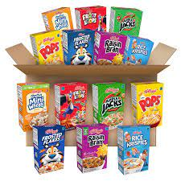

Cereal - The Homemade, Divine Guide Of How To

A delicious, cold dish as prepared by Nate
Time has proven itself vital in Nate's many iterations of his ever-evolving cereal recipe. Trial and effort has landed us with the best way to prepare and eat this delicacy: precuriously placed bananas and peanut butter
Ingredients
Ingredient measurements are changeable to one's own liking
- 5 cups cereal of choice (prefereably Honey Nut Cheerios or Frosted Flakes
- 1 liter almond milk, vanilla unsweetended
- 1 large banana
<1i>1 jar of Skippy's Creamy Peanut Butter
- 1 extra large bowl
- 1 very normal sized spoon
Nutrition info
- Total time: 3 minutes
- Prep: 3 minutes
- Servings: 1
- Yield: 1 extra large bowl
Directions
Every step is incredibly important in its own order. Be sure to follow exactly
- Place bowl at the location where the cereal will be eaten
- Take all 5 cups of cereal and pour into bowl
- On the side, take two thirds of the length-wise banana peel off, and place it on your eating surface
- Pour your almondmilk into the cereal bowl
- You are now ready to eat your cereal!
- As you are eating the cereal, take your spoon and cut a slice of your banana. Use that banana-filled spoon and scoop up some cereal. You'll find that the almond milk creates an amazing surface texture on the cut edges of the banana
- An amazing tip is also to put a bit of your Skippy's creamy peanut butter on the tip of your spoon. Scoop up more cereal with your peanut butter spoon
- If you desire, cut a piece of banana and put it to the side. Scoop up a bit of peanut butter, and place the banana on top of the peanut butter, and scoop up some cereal
Congratulations!! You have now eaten the most delicious cereal ever
It is highly recommended to watch It's Always Sunny in Philadelphia as you munch
Return to homepage